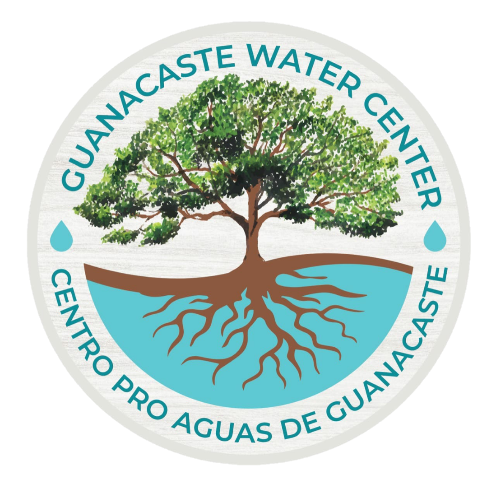

<nav class="navbar navbar-expand-lg navbar-light bg-light">
    <div class="container">
        <a class="navbar-brand" routerLink="/">
            <div class="row">
                <div class="col img">
                    
                </div>
              <div id="title"  class="col disableWidth720" *ngFor="let info of gwcInfo">
                    {{info.company_name}}
                </div>
            </div>
        </a>
        <button class="navbar-toggler" type="button" data-toggle="collapse" data-target="#navbarSupportedContent" aria-controls="navbarSupportedContent" aria-expanded="false" aria-label="Toggle navigation">
            <span class="navbar-toggler-icon"></span>
          </button>

        <div class="collapse navbar-collapse" id="navbarSupportedContent">

            <ul class="navbar-nav ml-auto">
                <li class="nav-item active dropdown">
                    <a style="color: #774F38;" *ngIf="language == 2" routerLinkActive="active"  class="nav-link dropdown-toggle color_texto" id="navbarDropdown" role="button" data-toggle="dropdown" aria-haspopup="true" aria-expanded="false">
                        Asociación Nandamojo
                    </a>

                    <a style="color: #774F38;" *ngIf="language == 1" routerLinkActive="active" class="nav-link dropdown-toggle color_texto" id="navbarDropdown" role="button" data-toggle="dropdown" aria-haspopup="true" aria-expanded="false">
                        Nandamojo Association
                    </a>
                    
                    <div id="NavDesplegar" class="dropdown-menu" aria-labelledby="navbarDropdown">
                        <a style="color: #774F38;" *ngIf="language == 1" class="dropdown-item color_texto" routerLinkActive="active" routerLink="/about-us" >About us</a>
                        <a style="color: #774F38;" *ngIf="language == 2" class="dropdown-item color_texto" routerLinkActive="active" routerLink="/about-us" >Sobre nosotros</a>
                        <hr>
                        <a style="color: #774F38;" *ngIf="language == 1" class="dropdown-item color_texto" routerLinkActive="active" routerLink="/restoring-our-watershed" >Restoring Our Watershed</a>
                        <a style="color: #774F38;" *ngIf="language == 2" class="dropdown-item color_texto" routerLinkActive="active" routerLink="/restoring-our-watershed" >Asociación Nandamojo</a>
                        <hr>
                        <a style="color: #774F38;" *ngIf="language == 1" class="dropdown-item color_texto" routerLinkActive="active" routerLink="/guanacaste-watershed" >Nandamojo watershed</a>
                        <a style="color: #774F38;" *ngIf="language == 2" class="dropdown-item color_texto" routerLinkActive="active" routerLink="/guanacaste-watershed" >Cuenca del río Nandamojo</a>
                    </div>
                </li>


                <li class="nav-item active">
                    <a style="color: #774F38;" *ngIf="language == 1" class="nav-link color_texto" routerLinkActive="active" routerLink="/bees-for-trees" >Bees for Trees</a>
                    <a style="color: #774F38;" *ngIf="language == 2" class="nav-link color_texto" routerLinkActive="active" routerLink="/bees-for-trees" >Abejas por árboles</a>
                </li>

                <li class="nav-item active">
                    <a style="color: #774F38;" *ngIf="language == 2" class="nav-link color_texto" routerLinkActive="active" routerLink="/reports">Reportes</a>
                    <a style="color: #774F38;" *ngIf="language == 1" class="nav-link color_texto" routerLinkActive="active" routerLink="/reports">Reports</a>
                </li>

                <li class="nav-item active">
                    <a style="color: #774F38;" *ngIf="language == 1" class="nav-link color_texto" routerLinkActive="active" routerLink="/media" >Media</a>
                    <a style="color: #774F38;" *ngIf="language == 2" class="nav-link color_texto" routerLinkActive="active" routerLink="/media" >Multimedia</a>
                </li>

                <li class="nav-item boton_nav">
                    <div class="drop-down">
                        <select style="color: #774F38;" id="language" (change) = "switchLanguage($event)" class="btn-group boton_nav">
                            <option style="color: #774F38;" value="1">En </option>
                            <option style="color: #774F38;" value="2">Es <i class="fas fa-wrench"></i></option>
                        </select>
                    </div>
                </li>

            </ul>

        </div>
    </div>
</nav>


